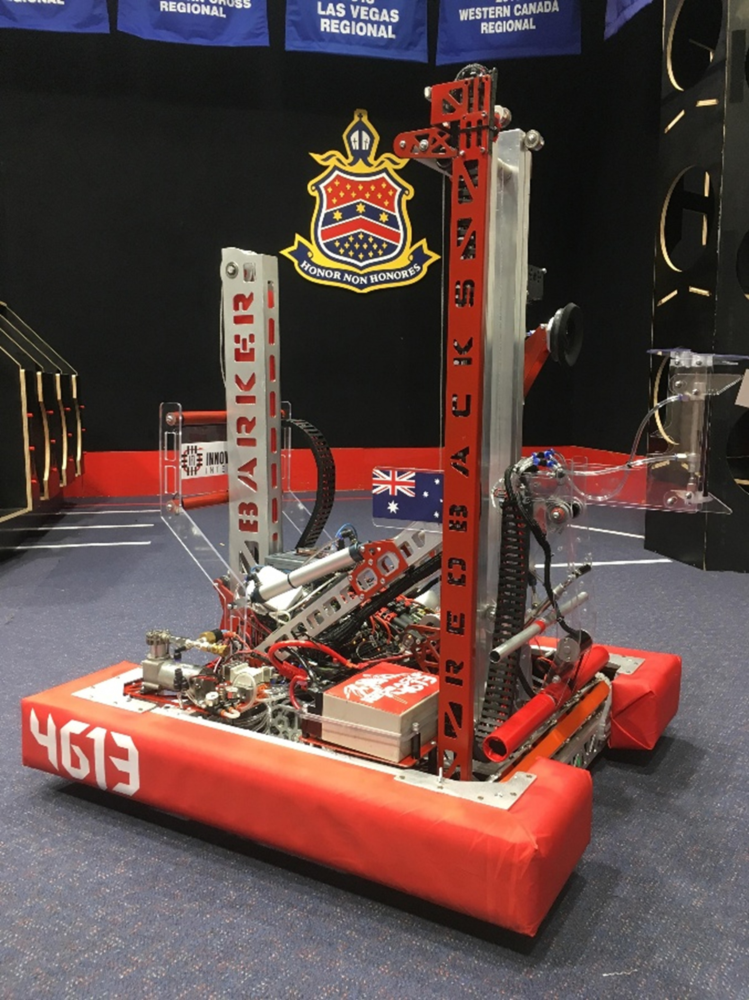
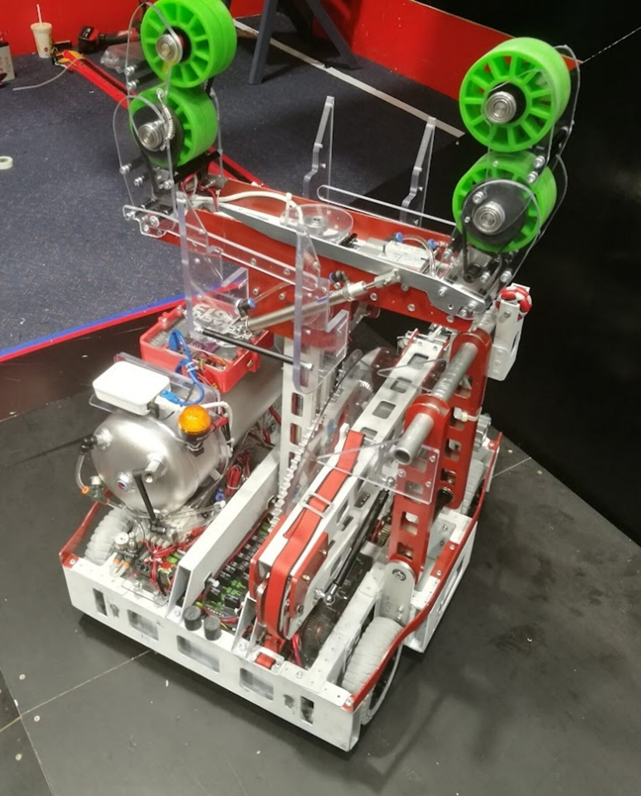

Four years competing with FRC Team 4613 from Barker College. Drivetrain sub-team lead and robot operator from 2017, won 4 regionals across Australia, China, and the US, and reached the international championship division finals among ~500 of the best teams in the world. 12 blue banners total.
FRC is a global high school robotics program with 5000+ teams. Each year teams have six weeks to design, build, and program a 54kg robot for a new challenge — tasks have included shooting game pieces, precision pick-and-place, and autonomous navigation.
FRC is where engineering clicked for me. The hard deadline, real competition stakes, and a robot that either works or doesn't on the field gave me a foundation that has carried through everything I've built since.


FRC Team 4613 robots, 2018 and 2019
From 2017 I designed, machined, and assembled the drivetrain using tube-and-gusset construction aluminium profiles CNC designed in SolidWorks and toolpathed in MasterCAM and Fusion360. I designed a custom two-speed pneumatic gearbox, with gear ratios selected by plotting DC motor torque-speed curves to maximise performance in each mode. I also ran machining workshops for newer team members on the lathe and CNC router.